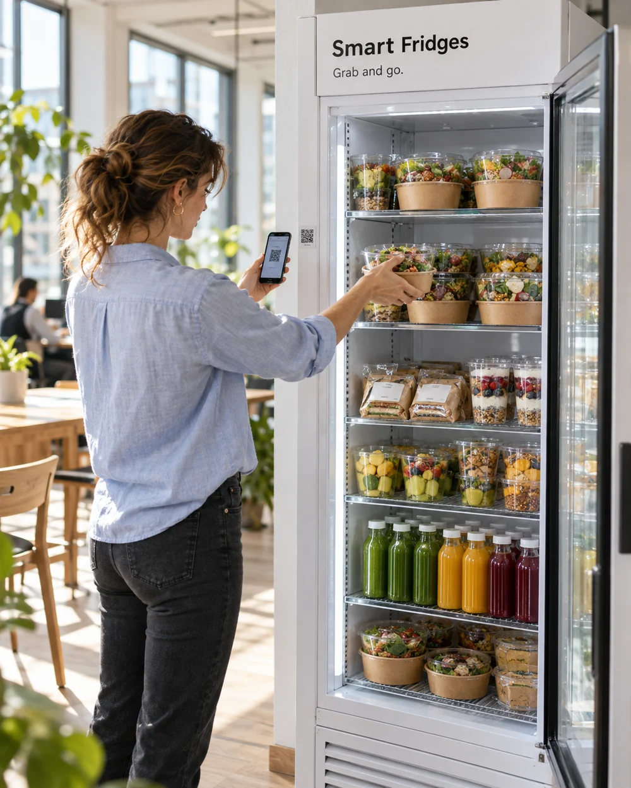
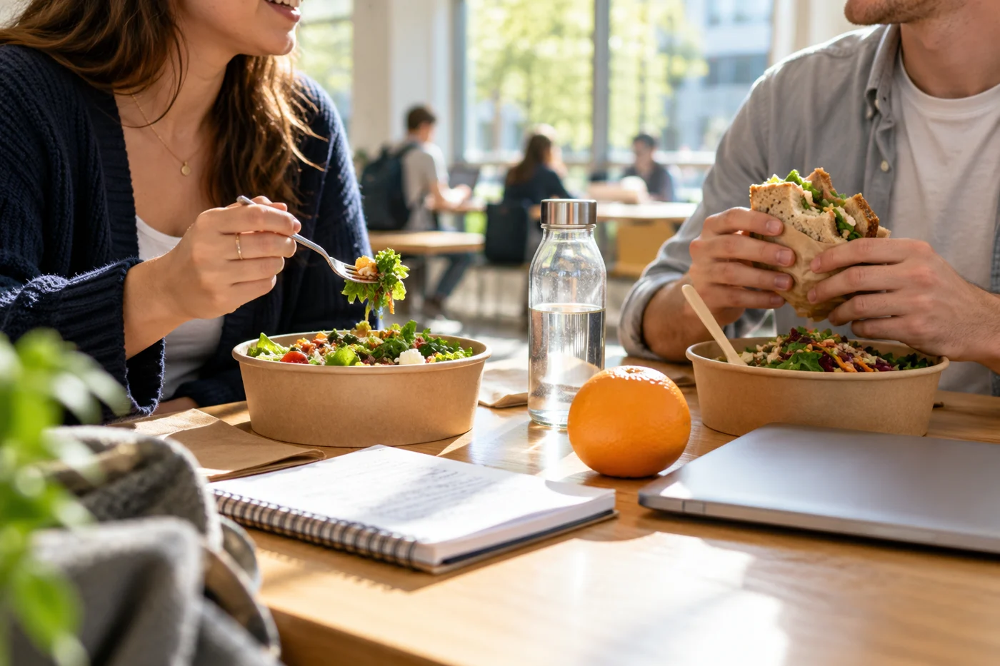
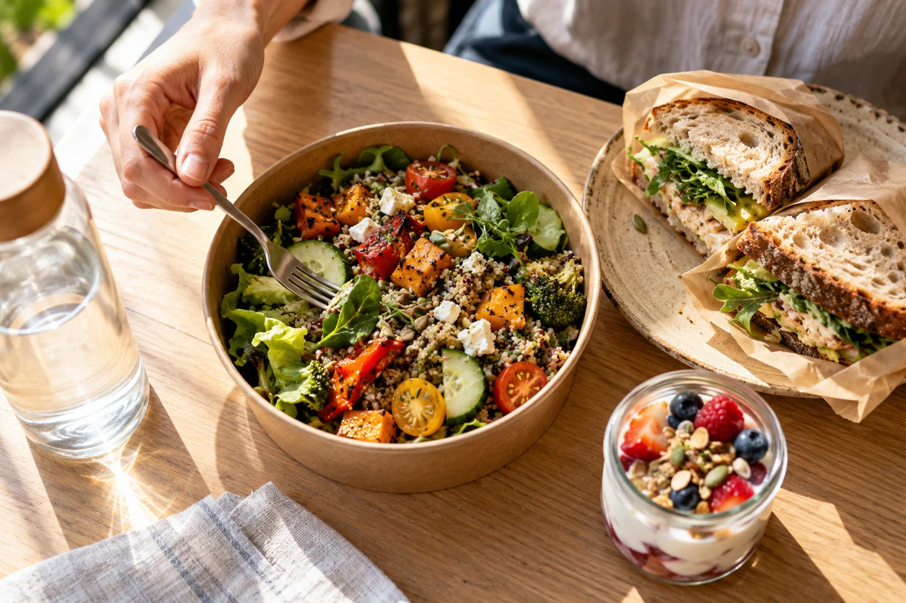

01 / Werkplekken
Een lunchplek voor je team.
Van een volle agenda naar een verse lunch. Een vertrouwde plek om iets te pakken, midden in de werkdag.
Voor jouw werkplekSlimmer eten op het werk
Verse, voedzame lunch
binnen handbereik.
Vers eten en drinken binnen handbereik.
Open de koelkast, pak wat je wilt en ga verder met je dag.
Voor werkplekken & campussen

Beschikbaar binnen de toegangstijden van je locatie.
Een goede plek voor goed eten
Smart Fridges brengt een compacte, onbemande foodservice naar locaties waar een traditionele kantine niet logisch is. Geen rij, geen kassapersoneel en de hele dag beschikbaar.
Ontdek wat past bij jouw locatie01 / Werkplekken
Van een volle agenda naar een verse lunch. Een vertrouwde plek om iets te pakken, midden in de werkdag.
Voor jouw werkplek
02 / Campussen
Een lunch, snack of drankje dichtbij. Voor studenten en medewerkers met ieder hun eigen dagindeling.
Voor jouw campus
03 / Gedeelde gebouwen
Meerdere bedrijven, één plek voor iets lekkers. Verken een Smart Fridge in de gezamenlijke ruimte.
Voor jouw gebouwGeen kassa. Geen wachtrij.
Scan de QR-code en identificeer jezelf in de Smart Fridges-app.
De deur ontgrendelt zodra je account en betaalmethode gereed zijn.
Kies je lunch, snack of drankje direct uit de koelkast.
Sluit de deur. Je aankopen worden geregistreerd en afgerekend.
Van lunch tot tussendoor
Een salade voor de lunch. Yoghurt tussen twee afspraken. Iets fris voor onderweg. Een Smart Fridge maakt ruimte voor de kleine pauzes die je dag beter maken.
Dit zijn assortimentvoorbeelden. Het aanbod stemmen we af op de locatie en de gebruikers.
Bespreek het assortimentSmart Fridges richt zich op werkplekken en campussen. Ook een gedeeld gebouw kan interessant zijn. Of het past, hangt onder meer af van het aantal gebruikers, hun eetmomenten en de beschikbare plek. Vertel ons over jouw locatie, dan bekijken we de mogelijkheden samen.
Er staat nog geen vast tarief op deze website. De kosten en afspraken hangen af van de invulling op jouw locatie. Vraag een gesprek aan om plaatsing, assortiment en beheer concreet te bespreken.
Bespreek de mogelijkheden →Bijvullen, voorraad, schoonmaak en service zijn onderdeel van de afspraken per locatie. We bespreken vooraf wie wat doet en hoe vaak, zodat de dagelijkse verantwoordelijkheden duidelijk zijn.
Een geschikte binnenruimte met stroom en voldoende ruimte om de deur te openen. De benodigde aansluiting, verbinding, bereikbaarheid en exacte maatvoering controleren we samen voor plaatsing.
Er is geen kassapersoneel nodig om iets te pakken. Gebruikers kunnen terecht zolang ze toegang hebben tot de locatie. In een gebouw dat dag en nacht toegankelijk is, kan de koelkast dus ook dag en nacht beschikbaar zijn.
Je scant de QR-code en maakt je account en betaalmethode gereed. Daarna open je de deur en pak je wat je wilt. Als je de deur sluit, worden je aankopen geregistreerd en afgerekend.
Voor de volgende uitrol
We zoeken locaties voor de volgende uitrol.
Vertel ons waar je aan denkt. Dan hebben we een goed vertrekpunt voor een gesprek.
info@smartfridges.nlJe aanvraag staat klaar.
Controleer je gegevens en verstuur de aanvraag via je eigen mailprogramma.
Klik in je mailprogramma op ‘Versturen’ om de aanvraag te verzenden.
Geen mailprogramma? en mail hem naar info@smartfridges.nl.